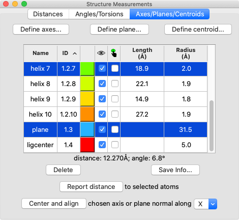

Axes/Planes/Centroids allows defining axis, plane, and centroid objects from sets of atoms and/or markers and using them for measurements. Axis and plane objects are created as cylindrical surface models and centroid objects as markers in the coordinate system of the lowest-numbered model involved in their calculation. They are listed in the Axes/Planes/Centroids table as well as in the Model Panel.
Axis, plane, and centroid objects can also be created with the command define, and they are saved in sessions. See also: distance, angle, reorienting the view, measurements
Axes/Planes/Centroids is tabbed together with the Distances and Angles/Torsions tools into a Structure Measurements window. It can be opened from the Structure Analysis section of the Tools menu and manipulated like other panels (more...).
Define axes...
Define plane...
Define centroid...
Table of Objects
Clicking Define axes... opens a dialog for defining axis objects (the equivalent command is define axis). Eigenvectors/values are calculated from the coordinates of each set of atoms/centroids after subtracting the position of their collective centroid. Each axis is anchored at the corresponding collective centroid and aligned with the principal (largest) eigenvector of the corresponding coordinates. There are four main choices of how to define axes, each with associated Axis Parameters:
Only one colorwell color, fixed radius, and fixed length can be given at a time, but axes with different values can be created in successive uses of the tool. Clicking Apply (or OK, which also closes the dialog) calculates the axes, adds them to the table, and generates the corresponding objects. Axis parameters are reported in the Log.
Clicking Define plane... opens a dialog for defining a plane based on the selected atoms (the equivalent command is define plane). Eigenvectors/values are calculated from the atomic coordinates after subtracting the position of their non-mass-weighted centroid. The plane is anchored at the centroid and aligned with the two largest eigenvectors (the third-largest eigenvector is normal to the plane).
Clicking Define centroid... opens a dialog for defining a centroid based on the selected atoms (the equivalent command is define centroid).
The table of objects includes the following columns, many the same as in the Model Panel:
|  |
Clicking a column header sorts the table by that column.
One or more objects can be chosen from the list by clicking and dragging with the left mouse button; Ctrl-click (or command-click if using a Mac) toggles whether an object is chosen. Chosen lines are highlighted in the dialog.
Clicking Delete removes the chosen objects.
Choosing any two objects reports their applicable geometric relationships below the table and in the Log. For angle measurements, axes and planes are treated as infinite. For distance measurements, axes are treated as finite line segments, while planes are treated as infinite.
Report distance measures distances between the chosen objects and selected atoms; the minimum, maximum, and mean distances to each chosen object are reported in the Log.
Center and align is available when a single axis or plane object is chosen. It centers and aligns the chosen axis, or centers the chosen plane and aligns its normal vector, along the specified direction in screen coordinates:
turn y 180 center #1.2.3
Clicking Save Info... writes all axis/plane/centroid information to a file, regardless of which objects are chosen in the table. For each object, the information includes model name, model ID, and untransformed center coordinates (xc,yc,zc). Axis information also includes length and direction (orientation) expressed as a unit vector (xu,yu,zu). Axis endpoint coordinates (x1,y1,z1) (x2,y2,z2) can be generated as follows:
|
x1 = xc – 0.5(length)(xu)
y1 = yc – 0.5(length)(yu) z1 = zc – 0.5(length)(zu) |
x2 = xc + 0.5(length)(xu)
y2 = yc + 0.5(length)(yu) z2 = zc + 0.5(length)(zu) |
Plane information also includes radius and orientation expressed as a normal unit vector.